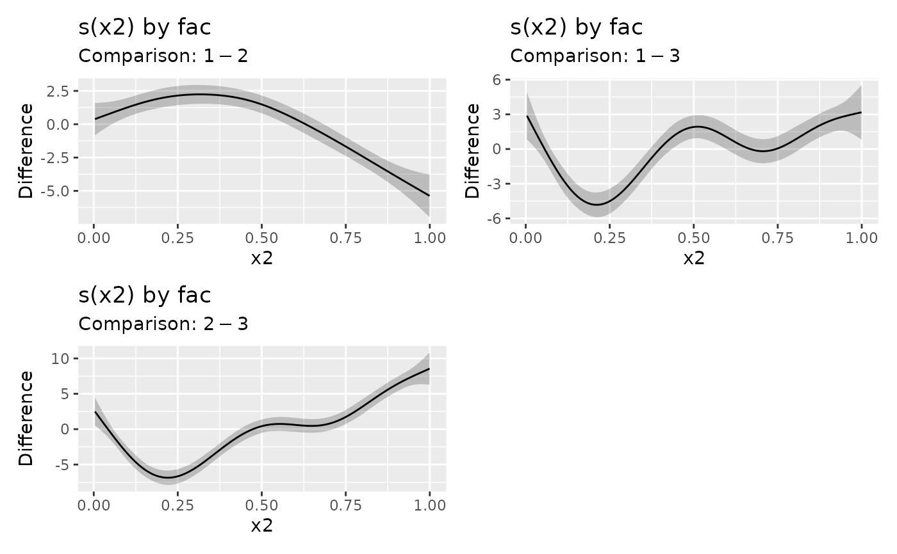

Estimates pairwise differences (comparisons) between factor smooth
interactions (smooths with a factor by argument) for pairs of groups
defined by the factor. The group means can be optionally included in the
difference.
Usage
difference_smooths(model, ...)
# S3 method for gam
difference_smooths(
model,
smooth,
n = 100,
ci_level = 0.95,
data = NULL,
group_means = FALSE,
partial_match = TRUE,
unconditional = FALSE,
frequentist = FALSE,
...
)Arguments
- model
A fitted model.
- ...
arguments passed to other methods. Not currently used.
- smooth
character; which smooth to compute differences for.
- n
numeric; the number of points at which to evaluate the difference between pairs of smooths.
- ci_level
numeric between 0 and 1; the coverage of credible interval.
- data
data frame of locations at which to evaluate the difference between smooths.
- group_means
logical; should the group means be included in the difference?
- partial_match
logical; should
smoothmatch partially againstsmooths? Ifpartial_match = TRUE,smoothmust only be a single string, a character vector of length 1. Unlike similar functions, the default here isTRUEbecause the intention is that users will be matching against factor-by smooth labels.- unconditional
logical; account for smoothness selection in the model?
- frequentist
logical; use the frequentist covariance matrix?
Examples
load_mgcv()
# \dontshow{
op <- options(digits = 3, cli.unicode = FALSE)
# }
df <- data_sim("eg4", seed = 42)
m <- gam(y ~ fac + s(x2, by = fac) + s(x0), data = df, method = "REML")
sm_dif <- difference_smooths(m, smooth = "s(x2)")
sm_dif
#> # A tibble: 300 x 9
#> smooth by level_1 level_2 diff se lower upper x2
#> <chr> <chr> <chr> <chr> <dbl> <dbl> <dbl> <dbl> <dbl>
#> 1 s(x2) fac 1 2 0.386 0.618 -0.824 1.60 0.00359
#> 2 s(x2) fac 1 2 0.479 0.574 -0.646 1.60 0.0136
#> 3 s(x2) fac 1 2 0.572 0.534 -0.474 1.62 0.0237
#> 4 s(x2) fac 1 2 0.665 0.497 -0.308 1.64 0.0338
#> 5 s(x2) fac 1 2 0.758 0.464 -0.151 1.67 0.0438
#> 6 s(x2) fac 1 2 0.850 0.435 -0.00342 1.70 0.0539
#> 7 s(x2) fac 1 2 0.941 0.412 0.134 1.75 0.0639
#> 8 s(x2) fac 1 2 1.03 0.393 0.262 1.80 0.0740
#> 9 s(x2) fac 1 2 1.12 0.378 0.380 1.86 0.0841
#> 10 s(x2) fac 1 2 1.21 0.367 0.489 1.93 0.0941
#> # ... with 290 more rows
draw(sm_dif)

# include the groups means for `fac` in the difference
sm_dif2 <- difference_smooths(m, smooth = "s(x2)", group_means = TRUE)
draw(sm_dif2)
 options(op)
options(op)